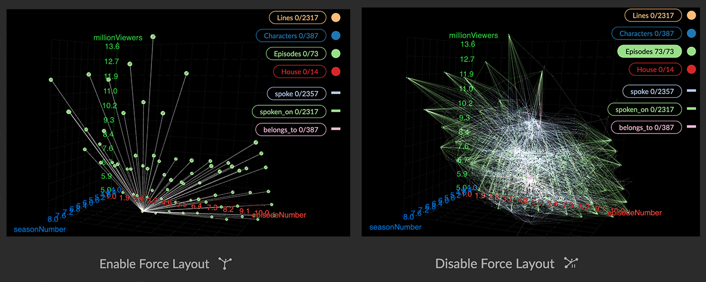
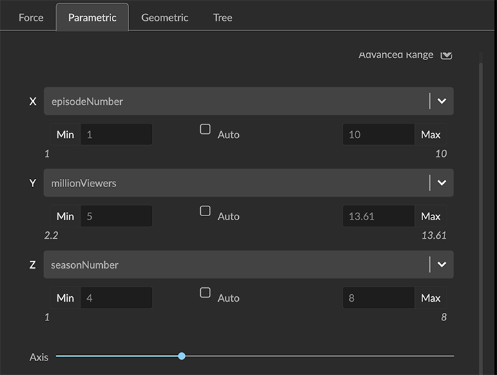

Using Parametric Layouts A Parametric layout enables you to create scatter plots by displaying any numerical property value encoded in your data on X-, Y-, or Z- axes. You can: Select a numerical property to be displayed on the X-, Y-, and Z- axes. Set an Advanced Range (minimum and maximum) of values to be displayed. Adjust the scale of the axes using the Axis slider. Choose to show or hide the Axes and/or the Grid. Click the Enable Force Layout icon to additionally display in a force-directed layout the connected nodes that don’t have the selected properties. The default is to collapse these nodes at the origin, because displaying them usually obscures the parametric scatter plot.  Apply the layout, or Reset the graph to restore the layout you started with. Creating a parametric layout To create a parametric layout: Click to open the Layout panel and choose the Parametric tab. Choose a property for the X-, Y-, and Z-axes from the drop down menus. You can flatten the layout to a 2D projection by choosing none as the Z-axis. Optionally, click the Advanced Range checkbox to set a range of property values to display.  Use the Axis slider to adjust the size of the scatterplot space. Click the Show Axes checkbox to show labeled X-, Y-, and Z- axes. Click the Show Grid checkbox to add gridlines. Click Apply to apply the parametric layout. Once you are done designing your parametric scatter plot, you can save a Snapshot or data View, and then Reset the data to the layout you started with. For example, if you start with geospatial data pinned to a map, then craft another view of it in a parametric layout, clicking Reset returns you to the map layout. Saving Parametric Layouts Your parametric layouts are temporarily saved in the lower part of the panel, and you can: Click Apply to re-apply a saved parametric layout. Click Delete to delete a saved parametric layout. Parametric layouts are deleted when you exit a project, but do persist in a Snapshot or data View.